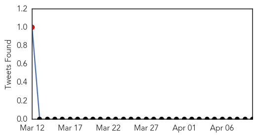
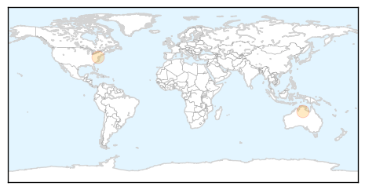
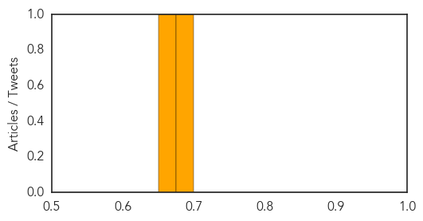

MERS
30-Day Web Trend
0 alerts, 0 warnings

30-Day Twitter Trend
0 alerts, 0 warnings

Article Locations

Article Confidences

Top Articles:
Top Tweets:
- 0.514
- Presence of Middle East respiratory syndrome coronavirus antibodies in Saudi Arabia: a nationwide, cross-sectional... http://t.co/3cpqlEuZKU
Hepatitis
30-Day Web Trend
0 alerts, 0 warnings
30-Day Twitter Trend
1 alerts, 0 warnings

Article Locations
Article Confidences
Top Articles:
Top Tweets:
-
No tweets found for Apr 10, 2015